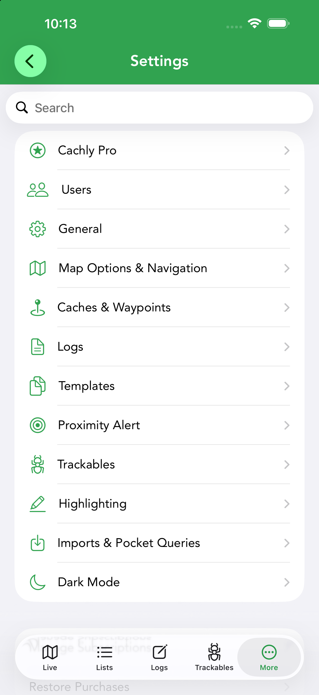
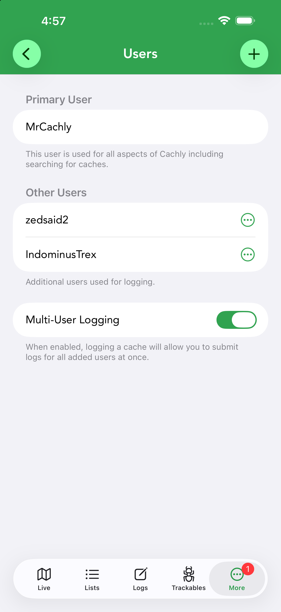
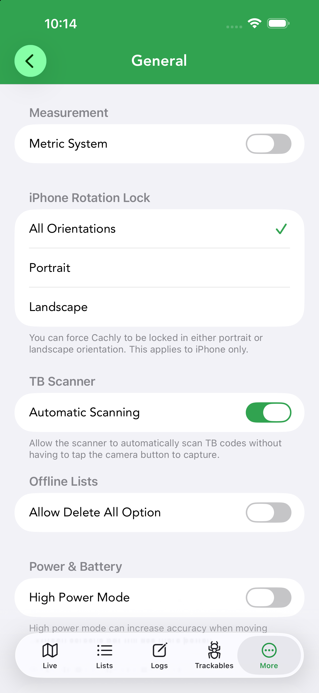
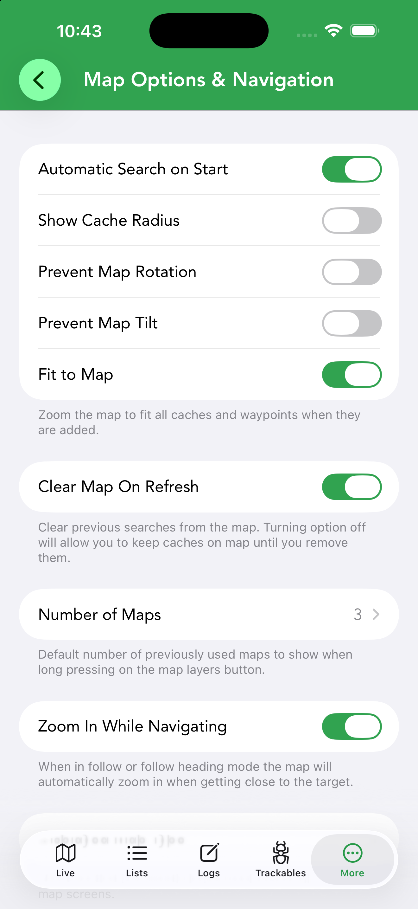
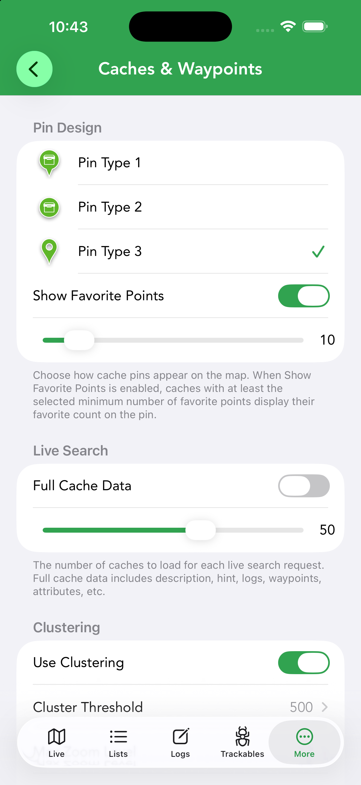
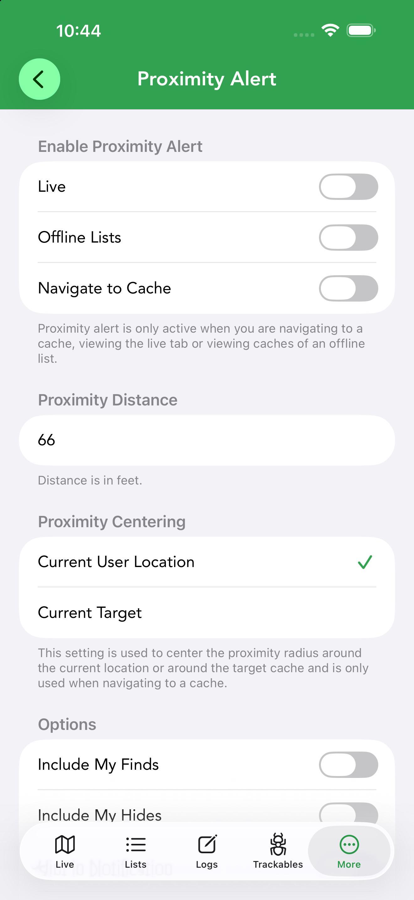

Settings
Settings (in the More tab) is where you tailor Cachly to how you cache. The screen is searchable — type in the search box at the top to jump to an option by name — and is organized into the categories below.






How Settings is organized
The Settings root screen lists twelve categories: Cachly Pro, Users, General, Map Options & Navigation, Caches & Waypoints, Logs, Templates, Proximity Alert, Trackables, Highlighting, Imports & Pocket Queries and Dark Mode. Each is covered below.
Beneath the categories are Manage Subscriptions (opens your Apple ID subscription management) and Restore Purchases, which re-activates a Cachly Pro subscription after a reinstall or on a new device.
Cachly Pro PRO
Everything tied to your Pro subscription lives here, grouped by feature:
- Cachly Intelligence — enable AI features, pick the AI Provider (Apple Intelligence, Claude, ChatGPT, Gemini), and edit the Log Summary, Description Summary and Log Writing prompts. See Cachly Intelligence.
- Pro Offline Maps — Download Offline Maps, Layer Options, Offline Searching (search map features within the screen bounds) and Counties & Regions. See Offline Maps.
- Automatically Add Finds — add finds made in Cachly to your Counties and DeLorme challenge maps automatically.
- Automatically Load Caches — Use Auto Load Caches loads new caches as you move around the live map, with toggles for Adventure Labs and their stages.
- CarPlay — microphone and speech-recognition permissions used for voice logging in the car.
- Project GC — enter your User Token and User ID (from project-gc.com/User/Settings) to enable Project GC features.
Users
Your Primary User is the account used for all aspects of Cachly, including searching for caches. You can add additional users here so a group caching together can log finds under several accounts at once — see multi-user logging. If an added account’s session expires, return to Settings › Users to sign it in again.
General
App-wide preferences, from units to power use:
- Measurement — switch between Metric and imperial units.
- iPhone Rotation Lock — All Orientations, Portrait or Landscape (iPhone only).
- TB Scanner — Automatic Scanning reads trackable codes without tapping the capture button.
- Offline Lists — allow (or hide) the Delete All option.
- Power & Battery — High Power Mode improves GPS accuracy when moving between screens at the cost of battery.
- Default Coordinate Format — the format used when copying coordinates: DDM (N 47° 38.938’), decimal degrees, UTM, Copy Presented Format, or Use Coordinate Picker to choose each time. See coordinate formats.
- Sorting — Re-sort on Location Updates keeps distance-sorted lists in order as you move.
- Other — Decode Hint (auto-decrypt ROT13 hints) and Delete Offline Upvote Counts.
Map Options & Navigation
Controls how the map behaves and which app handles driving directions:
- Map behavior — Automatic Search on Start, Show Cache Radius, Prevent Map Rotation / Prevent Map Tilt, Fit to Map (zoom to fit all caches and waypoints) and Clear Map On Refresh (turn off to keep previous searches on the map).
- Number of Maps — how many recently used maps appear when you long-press the map-layers button.
- Zoom In While Navigating — in follow / follow-heading mode, automatically zoom in as you close on the target.
- Displayed Map Type — the map type used across all map screens; also see Sync Live & Offline Map Position.
- World Landcover and Hillshades PRO — Landcover and Hillshades layers for Pro maps (small bandwidth use, online only), plus Tile URLs 2x Size for easier-to-read custom tiles.
- Map API Keys — some map sources need a free key, e.g. Open Cycle & Thunderforest.
- Navigation — choose the external navigation app used for driving directions from the Navigate to Cache screen.
Caches & Waypoints
How caches and waypoints look and load:
- Pin Design — three pin styles, plus Show Favorite Points to display the favorite count on pins above a minimum you set.
- Live Search — Full Cache Data (description, hint, logs, waypoints, attributes) and how many caches each live-search request loads.
- Clustering — Use Clustering with a Cluster Threshold and Max Zoom Level; reduces memory use when many caches are on the map.
- Ignore Corrected Coordinates — show caches at their original rather than corrected coordinates.
- Waypoints — Show All Waypoints on the map, filterable by type (requires Full Cache Data for live caches).
- Lonely Caches — mark caches unfound for a set Number of Days with a clock icon.
- Did Not Find (DNF) — Clear Pending DNF on Map and Show Cache Type on Map alongside the DNF marker.
- Found But Not Logged — Clear All Checkmarks, and the FTF Indicator that flags caches nobody has found yet.
Logs
Defaults for writing logs:
- Logging Defaults — choose whether new logs default to Send Log Now or Save as Draft, and set the default Log Type.
- Display — Recent Logs Use Smilies shows smiley/frown icons instead of colored dots in cache details.
Templates
Create reusable text templates for your logs here — boilerplate like a thank-you line or your team sign-off. Templates can be inserted while writing a log or applied automatically by log type.
Proximity Alert
Cachly can play an audio alert and post a notification as you near a cache, so your phone can stay pocketed on the approach:
- Enable Proximity Alert — separately for the Live tab, Offline Lists and Navigate to Cache.
- Proximity Distance — the trigger radius (in feet).
- Proximity Centering — center the radius on your Current User Location or the Current Target (used when navigating to a cache).
- Options — Include My Finds, Include My Hides, Hint in Notification, and Notify For All Caches (alert for nearby caches, not just the target).
- Notification Sound — pick the alert sound.
Trackables
Automatically Visit lets trackables in your inventory be visited with each cache log: turn on Enable Auto-Visit and pick which trackables under Auto-Visit Trackables. Applies to Found It and Attended log types.
Highlighting
Maintenance tools for cache highlights:
- Manually Sync Highlights — fix highlights that got out of sync on offline lists after changes on another device.
- Remove By Color / Remove All Highlights — clear highlights, across all devices.
- Restore Caches From Highlights and Edit Highlight Color Labels — rebuild caches from your highlight records and rename what each color means.
Imports & Pocket Queries
Controls for GPX imports and pocket queries:
- Lock Corrected Coordinates / Lock Found Status — prevent imported GPX data from being overwritten when caches update.
- GSAK — User Flag Sets Highlight highlights caches whose GSAK user flag is set.
- Adventure Lab — Show Import Icon distinguishes imported Adventure Labs from API-loaded ones.
- Pocket Queries — Import Using Full Data brings in personal notes and corrected coordinates; turn it off for a faster GPX-only import.
Dark Mode
By default Cachly follows the iOS appearance. Two toggles let you opt out independently: Dark Interface Styles controls whether the app’s interface goes dark when iOS is in dark mode, and Dark Map Styles does the same for the maps — so you can keep a light map under a dark interface, or vice versa.